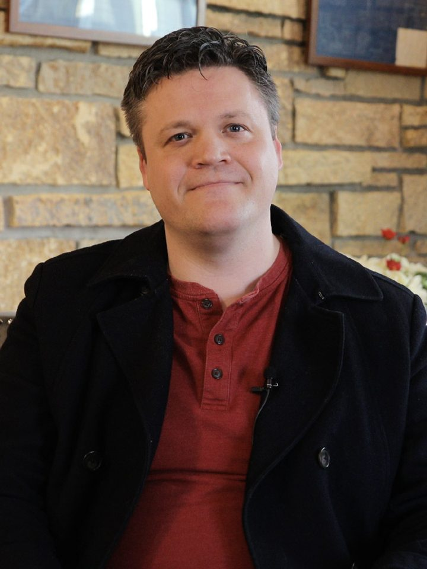
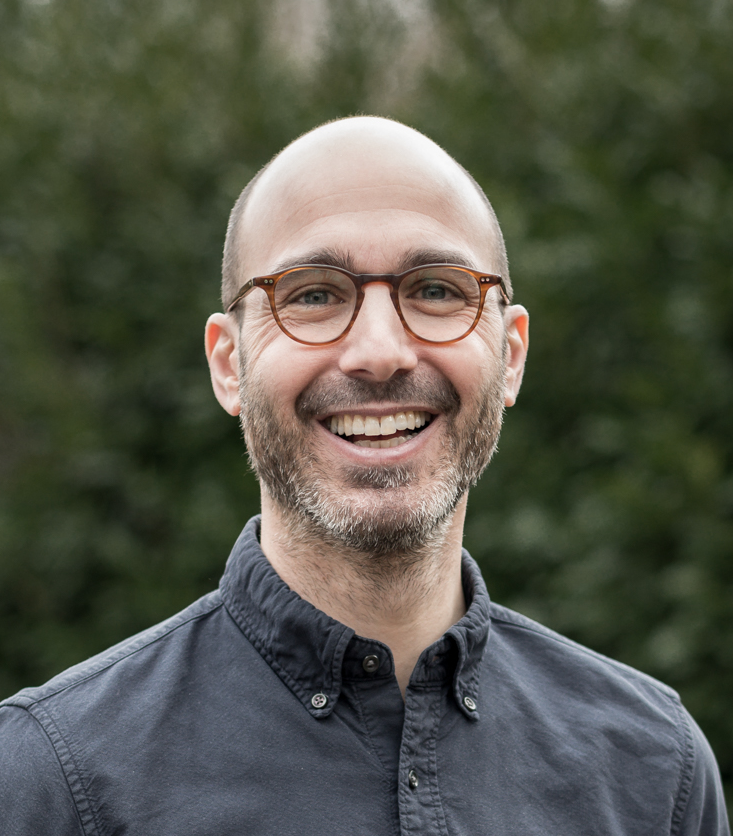
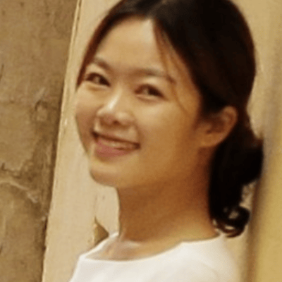
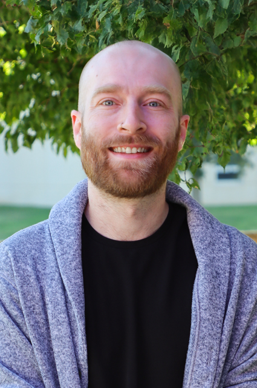

Principal investigators
Robby Ratan
Michigan State University
Maxwell Foxman
University of Oregon
Alex P. Leith
Southern Illinois University Edwardsville
David Beyea
University of Wisconsin-Whitewater
Brian Winn
Michigan State University

Brian Klebig
Bethany Lutheran College
Faculty collaborators
Vivian H. H. Chen
Erasmus University Rotterdam. Co-editor of the Journal of Media Psychology special issue.
Jeremy Bailenson
Stanford University, Virtual Human Interaction Lab. Co-author of foundational papers.

Dar Meshi
Michigan State University. Co-author of avatar and play research.
Oskar Milik
Michigan State University. First author of the focus group methods paper.
Doctoral alumni

Chaeyun Lim
Postdoctoral research fellow, Northwestern University, Kellogg School of Management.

Dalton Bouzek
Assistant teaching professor of communications, Kansas State University Salina.
Doctoral researchers
All at Michigan State University.
Members
Current
- Daniele Gyekye University of Oregon
- Megan Denneny University of Oregon
- Jack Waier Michigan State University
Former
- Faria Shaikh University of Oregon
- Luis Graciano Michigan State University
- Gabriel Hales Michigan State University
- Olivia JuYoung Lee Michigan State University
- Mary Onuche Southern Illinois University Edwardsville